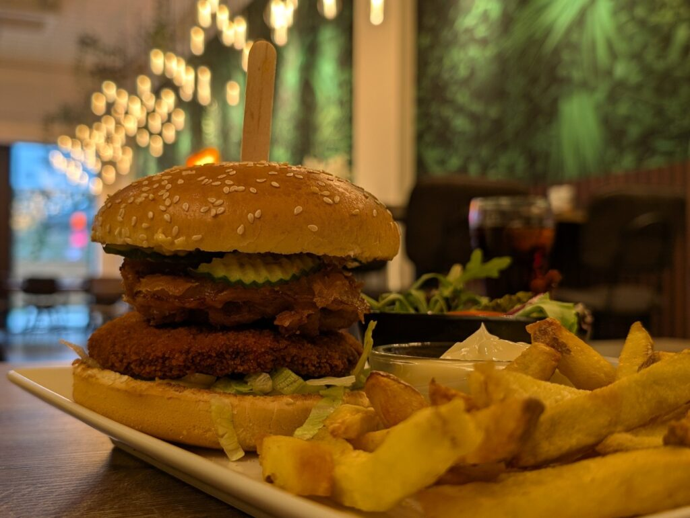
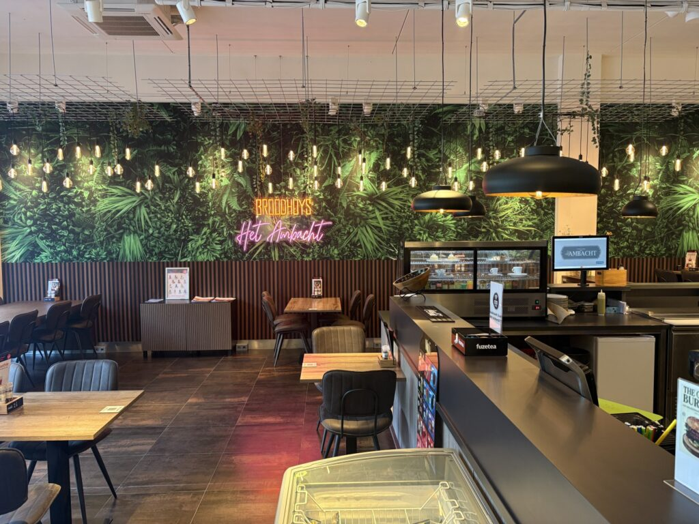
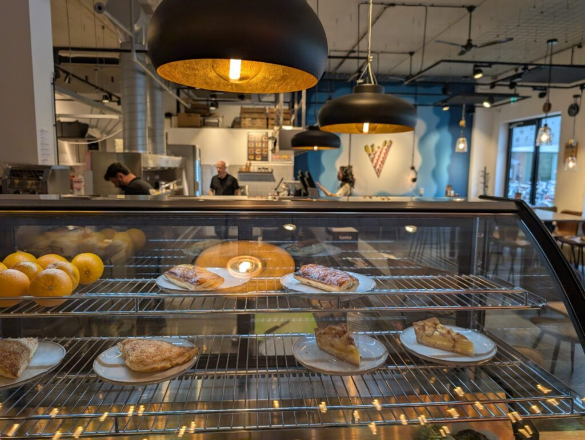
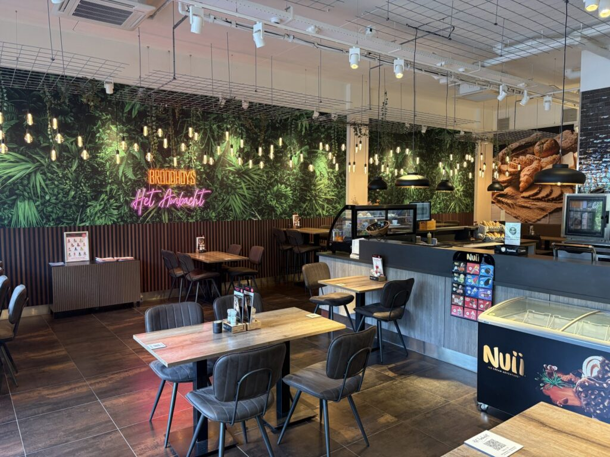
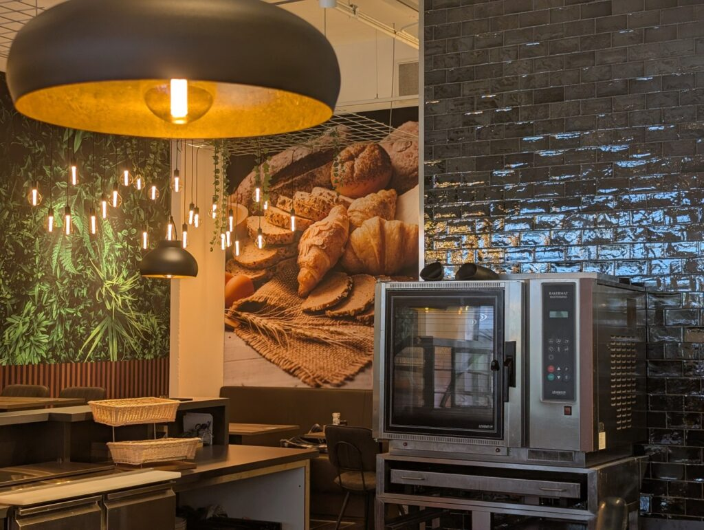
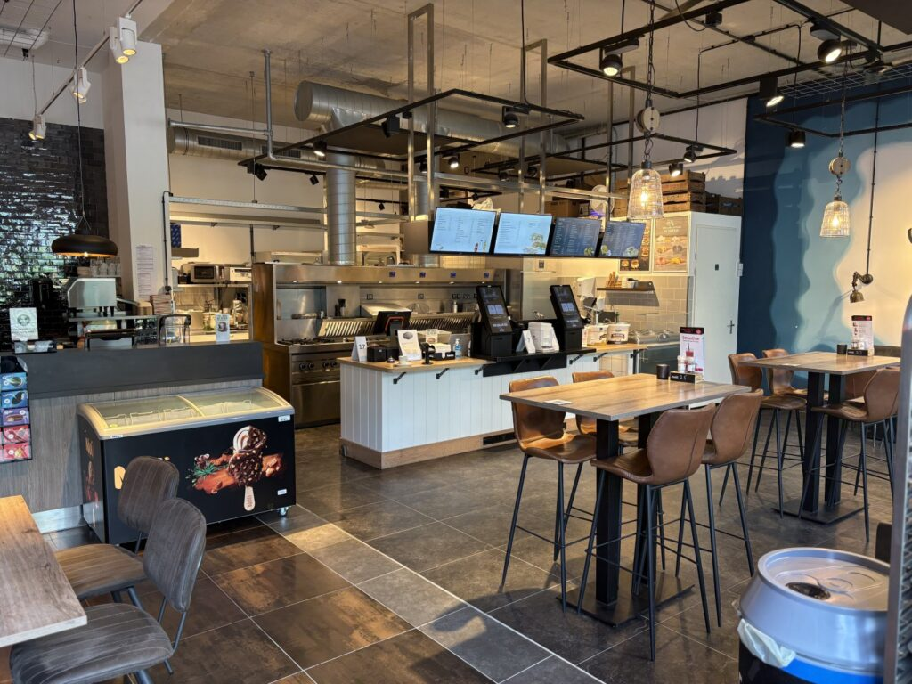

Friet
Verse friet met schil wordt door ons zelf gesneden, voorgebakken en bereid.

Campus Wageningen
Verse burgers, huisgemaakte bakkerskroketten en ambachtelijk Italiaans ijs. Bestel nu, of kom langs om ze zelf te proeven.
Verse friet met schil wordt door ons zelf gesneden, voorgebakken en bereid.
Heerlijke verse burgers en huisgemaakte kroketten: groentekroket en champignonkroket.
Ambachtelijk Italiaans ijs. Verkrijgbaar in diverse heerlijke smaken.

Een vast onderdeel van Smaakpunt Het Ambacht is Broodhuys Het Ambacht. Hier bereiden we dagelijks verse, rijk belegde broodjes, speciaal voor studenten, medewerkers en bezoekers van Wageningen Campus.
Ideaal voor een smakelijke lunch, een snelle hap tussendoor of iets lekkers om mee te nemen.
Onze cafetaria werd in 2017 opgericht door Derk Joosten. Na jarenlang als banketbakker te hebben gewerkt, besloot Derk het roer om te gooien en zijn eigen cafetaria te beginnen. Zijn ervaring, vakmanschap en liefde voor voedselbereiding proef je terug in onze ambachtelijk bereide friet, huisgemaakte bakkerskroketten en heerlijke snacks.
In 2026 kreeg de cafetaria een nieuwe naam: Smaakpunt Het Ambacht. Een nieuwe naam, maar met dezelfde vertrouwde kwaliteit en persoonlijke aandacht, in een groter pand op het vertrouwde adres.
Of je nu komt voor verse friet, een huisgemaakte kroket of een heerlijk belegd broodje: bij Smaakpunt Het Ambacht ben je van harte welkom! Ambachtelijk bereid, vers geserveerd en altijd smaakvol.
Gr. Derk Joosten en team




| Maandag | 17:00 – 20:00 |
|---|---|
| Dinsdag | 11:30 – 20:00 |
| Woensdag | 11:30 – 20:00 |
| Donderdag | 11:30 – 20:00 |
| Vrijdag | 11:30 – 20:00 |
| Zaterdag | Gesloten* |
| Zondag | 17:00 – 20:00 |
* In onze bestelsite staan voor zaterdag andere tijden. Bel ons even als je op zaterdag wilt komen.